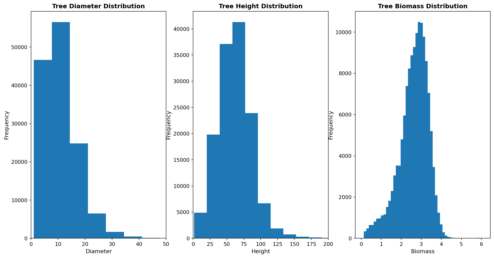
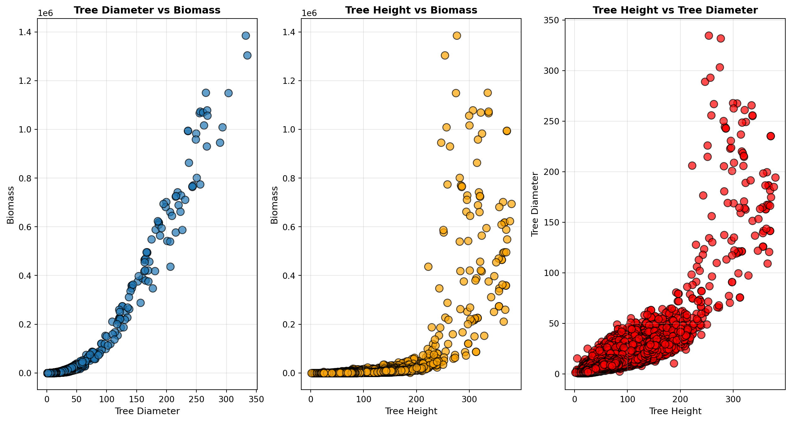
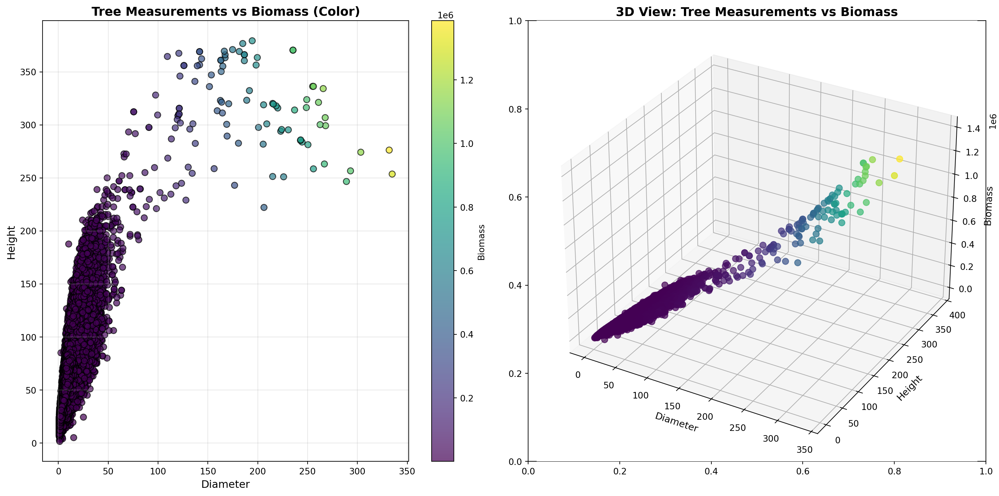
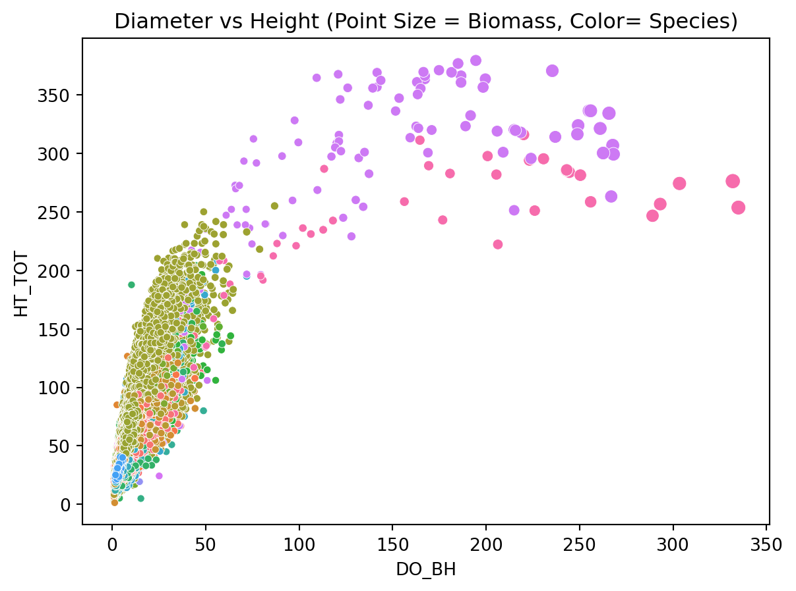

Redwood Analytics Project 3: Predicting Tree Biomass
By Evan Blem, Dean Callahan, Zach Griffiths, and Jaiden Roe
Data Dictionary
SPCD (FIA Species Code): A numeric code which unqiuely identifies each tree species and corresponds to a scientific and common name for the tree as specified by the FIA (Forest Inventory and Analysis) species coding system.
DO_BH (Diameter at Breast Height): Diameter of the tree stem measured at breast height (4.5 feet or 1.37 meters above ground) including bark. This is the standard foresty measurement “DBH (outside bark)” and is the primary size variable used in nearly all allometric biomass models. This is measured in inches.
Data Dictionary Continued
HT_TOT (Total Tree Height): The total height of the tree measured from ground level to the top of the crown. Used as a second size metric in volume and biomass modeling. This is measured in feet.
TT_DW_CRM (Total Tree Dry Biomass): The total above-ground dry weight of the tree (includes stem wood, stem bark, branches, folliage). The value comes from destructive sampling: the tree was felled, separated into componenets, oven-dried, and weighed. This variable serves as the target variable from biomass prediction. Measured in kilograms.
Univariate Visualizations
Data Summaries
COMMON_NAME
loblolly pine 20140
slash pine 8006
Douglas-fir 7322
ponderosa pine 5609
shortleaf pine 5599
longleaf pine 4949
white oak 3955
sweetgum 3494
yellow-poplar 3372
red maple 3109
Name: count, dtype: int64| SPCD | DO_BH | HT_TOT | TT_DW_CRM | |
|---|---|---|---|---|
| count | 137079.000000 | 137079.000000 | 137079.000000 | 1.370790e+05 |
| mean | 341.054465 | 11.104809 | 62.081565 | 1.530719e+03 |
| std | 341.609599 | 8.046896 | 25.834963 | 1.698299e+04 |
| min | 10.000000 | 1.000000 | 1.400000 | 1.020000e+00 |
| 25% | 121.000000 | 6.500000 | 45.000000 | 1.689850e+02 |
| 50% | 132.000000 | 9.900000 | 61.100000 | 5.276000e+02 |
| 75% | 611.000000 | 14.300000 | 76.700000 | 1.352070e+03 |
| max | 8768.000000 | 334.900000 | 379.300000 | 1.385886e+06 |
Data Summaries
| HT_TOT | DO_BH | TT_DW_CRM | |
|---|---|---|---|
| COMMON_NAME | |||
| Alaska yellow-cedar | 75.11 | 14.19 | 1873.10 |
| American basswood | 70.87 | 11.84 | 821.54 |
| American beech | 68.84 | 13.39 | 1867.46 |
| American chestnut | 51.01 | 7.21 | 249.15 |
| American elm | 54.26 | 9.15 | 515.40 |
| American holly | 31.10 | 6.09 | 242.32 |
| American hornbeam, musclewood | 31.87 | 2.82 | 40.72 |
| American mountain-ash | 32.59 | 5.53 | 114.80 |
| American sycamore | 77.29 | 13.40 | 1383.72 |
| Atlantic white-cedar | 51.62 | 8.90 | 352.23 |
Bivariate Visualizations

Additional Visualizations

Visualization Containing all 4 Variables

Model Domain Information
Model Inputs & Domains:
- SPCD: FIA species code (categorical). Only includes species in the full dataset with a count greater than 100.
- DO_BH: Diameter, measured in inches. Valid Range: 1.0-255.9 inches (based on training data min and max)
- HT_TOT: Height, measured in feet. Valid Range: 2.5-370.5 feet
Output:
- TT_DW_CRM: Total above-ground dry biomass in kilograms
Model Limitations:
- Species limitations: Model won’t work for less frequent species or species that don’t appear at all in the dataset
- Effectiveness varies based on species: Some species it performs well on others it performs poorly on: RMSLE of 0.0234800 for loblolly pine vs RMSLE of 0.713023 for pecan
- k=3: Lower k value may lead to overfitting of data due to potential outliers and noise
Consultation
- When predicting tree biomass, employ the performance metric root mean square logarithmic error since biomass data varies greatly, ranging from tiny saplings to enormous trees, majority of trees having exponential growth.
- We chose kNN regression over linear regression because when looking at the graphs Dean presented, we saw that the tree diameter/height vs. biomass graphs all have exponential growth.
Consultation pt 2
- When relations between biomass and trees diameter and height are complex and non linear, data is abundent, and the model needs to be adaptive with out maksing major changes in the model. kNN excels in capturing patterns and irregular patterns.
Performance Metric
- RMSLE over RMSE: focuses on percentage errors, making it fair to both small and large trees, unlike RMSE, which we believe penalizes errors on big trees. Fitting biomass estimations where scale matters more than absolute error.
- By prioritizing percentage errors, RMSLE provides a more balanced evaluation that considers the unique characteristics of tree biomass data.
Model
| Species | k | RMSE | MAE | RMSLE | |
|---|---|---|---|---|---|
| 0 | balsam fir | 2 | 125.827396 | 34.820565 | 0.119617 |
| 1 | balsam fir | 3 | 129.650855 | 36.628377 | 0.123679 |
| 2 | balsam fir | 4 | 134.599829 | 38.884870 | 0.133858 |
| 3 | balsam fir | 5 | 145.002852 | 41.168470 | 0.144052 |
| 4 | balsam fir | 6 | 147.449208 | 40.728609 | 0.142813 |
| ... | ... | ... | ... | ... | ... |
| 895 | sugarberry | 6 | 32.431052 | 20.969306 | 0.565727 |
| 896 | sugarberry | 7 | 37.324259 | 25.037024 | 0.637629 |
| 897 | sugarberry | 8 | 38.144756 | 26.680208 | 0.665159 |
| 898 | sugarberry | 9 | 36.853245 | 21.021667 | 0.685162 |
| 899 | sugarberry | 10 | 40.091106 | 23.172083 | 0.677519 |
900 rows × 5 columns
Technical Lead
- Split and filtering methods
- Feature engineering (what worked and what didn’t)
- Tuning k for the best model
- The final “best” model and error # Tree Measurement Data:
| SPCD | DO_BH | HT_TOT | TT_DW_CRM | |
|---|---|---|---|---|
| 0 | 12 | 7.5 | 45.2 | 178.86 |
| 1 | 12 | 9.3 | 62.7 | 323.46 |
| 2 | 12 | 9.7 | 56.7 | 342.47 |
| 3 | 12 | 11.4 | 66.1 | 499.35 |
| 4 | 12 | 6.4 | 51.8 | 113.92 |
Tree Species Name Data:
| SPCD | COMMON_NAME | |
|---|---|---|
| 0 | 10 | fir spp. |
| 1 | 11 | Pacific silver fir |
| 2 | 12 | balsam fir |
| 3 | 14 | Santa Lucia or bristlecone fir |
| 4 | 15 | white fir |
Combined Dataset (species mapped onto bigger dataset):
| SPCD | DO_BH | HT_TOT | TT_DW_CRM | COMMON_NAME | |
|---|---|---|---|---|---|
| 0 | 12 | 7.5 | 45.2 | 178.86 | balsam fir |
| 1 | 12 | 9.3 | 62.7 | 323.46 | balsam fir |
| 2 | 12 | 9.7 | 56.7 | 342.47 | balsam fir |
| 3 | 12 | 11.4 | 66.1 | 499.35 | balsam fir |
| 4 | 12 | 6.4 | 51.8 | 113.92 | balsam fir |
Filtered data
| SPCD | DO_BH | HT_TOT | TT_DW_CRM | COMMON_NAME | |
|---|---|---|---|---|---|
| 0 | 12 | 7.5 | 45.2 | 178.86 | balsam fir |
| 1 | 12 | 9.3 | 62.7 | 323.46 | balsam fir |
| 2 | 12 | 9.7 | 56.7 | 342.47 | balsam fir |
| 3 | 12 | 11.4 | 66.1 | 499.35 | balsam fir |
| 4 | 12 | 6.4 | 51.8 | 113.92 | balsam fir |